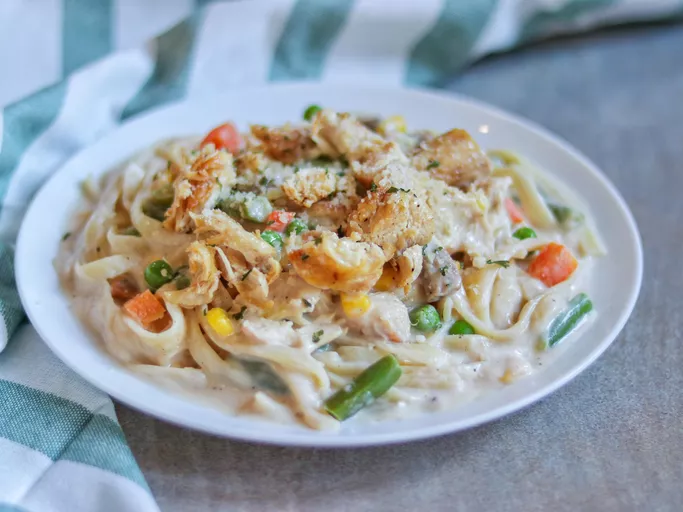

Chicken Alfredo

Description
Chicken Alfredo is a creamy pasta dish made with fettuccine, tender chicken, and a rich Alfredo sauce. It's a delicious and satisfying meal that can be prepared in under 30 minutes!
Ingredients
- 300g fettuccine pasta
- 2 boneless, skinless chicken breasts
- 2 tablespoons olive oil
- 2 cloves garlic, minced
- 200ml heavy cream
- 100g grated Parmesan cheese
- Salt and pepper to taste
- Fresh parsley for garnish (optional)
Steps
- Cook fettuccine according to package instructions; drain and set aside.
- In a skillet, heat olive oil over medium heat. Season chicken breasts with salt and pepper, then cook until golden and cooked through, about 6-7 minutes per side. Remove and slice.
- In the same skillet, add garlic and sauté for 1 minute.
- Pour in heavy cream and bring to a simmer. Stir in Parmesan cheese until melted and smooth.
- Add the cooked fettuccine and sliced chicken to the sauce; toss to combine.
- Serve hot, garnished with fresh parsley if desired.